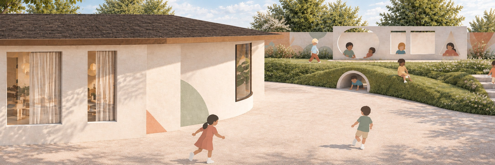

01 · EDUCATIONAL ARCHITECTURE
Nyano Learning School
2026Bhaktapur, NepalDesign Studio VI
A pre-primary school imagined as a rabbit burrow, a protective learning landscape where children move from enclosure to openness with curiosity.
VIEW PROJECT →